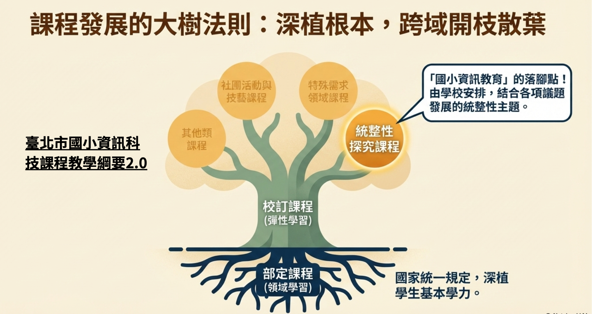
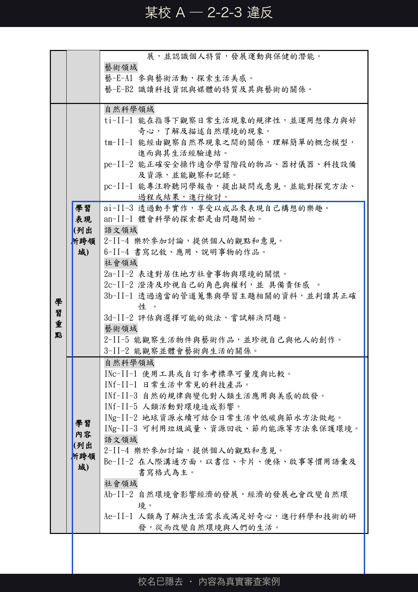
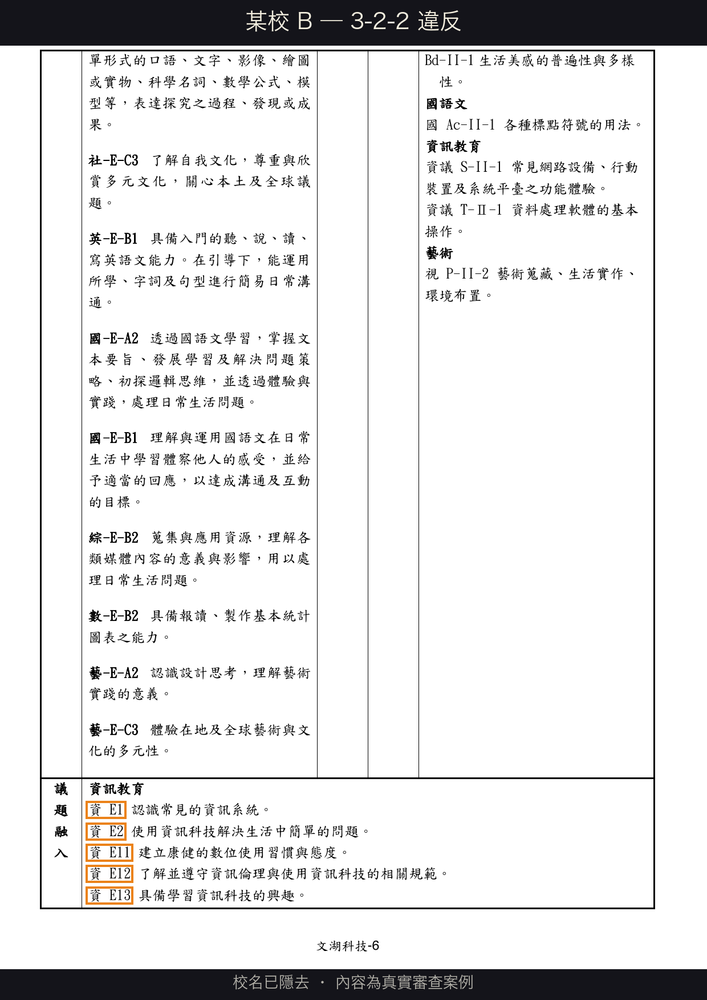
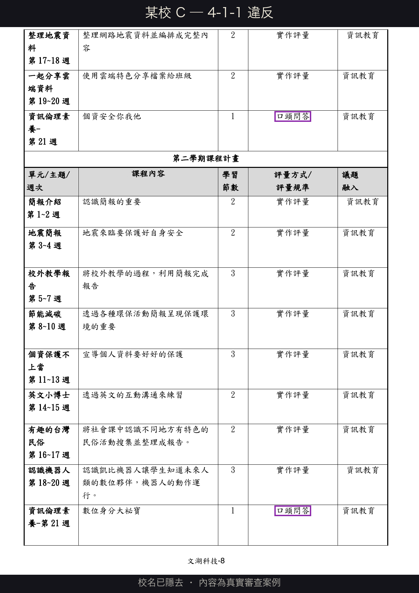
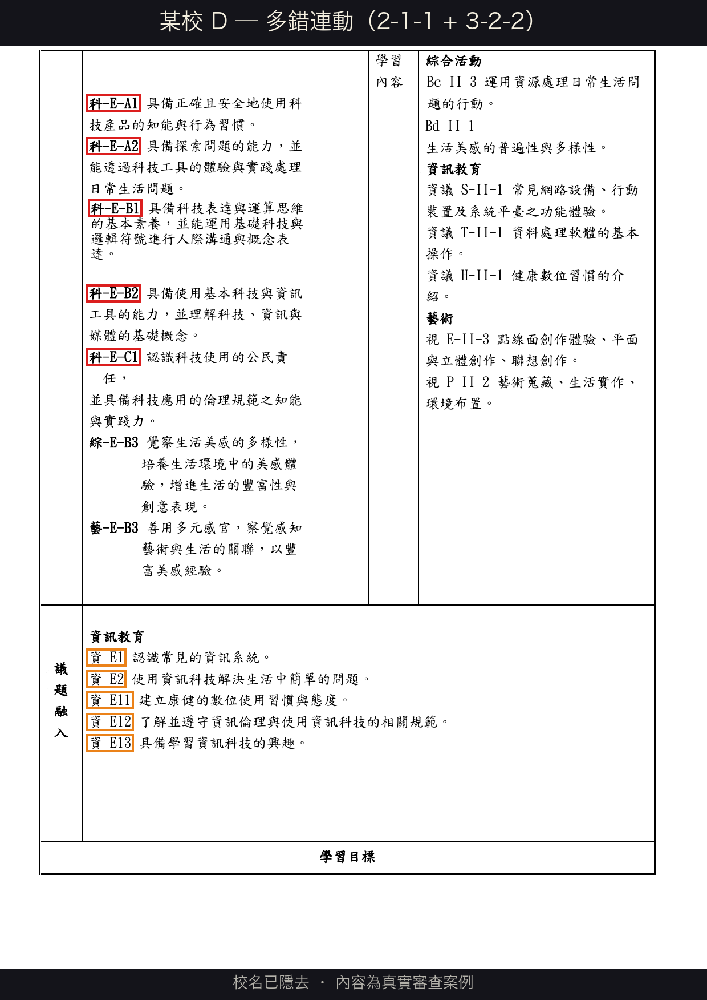
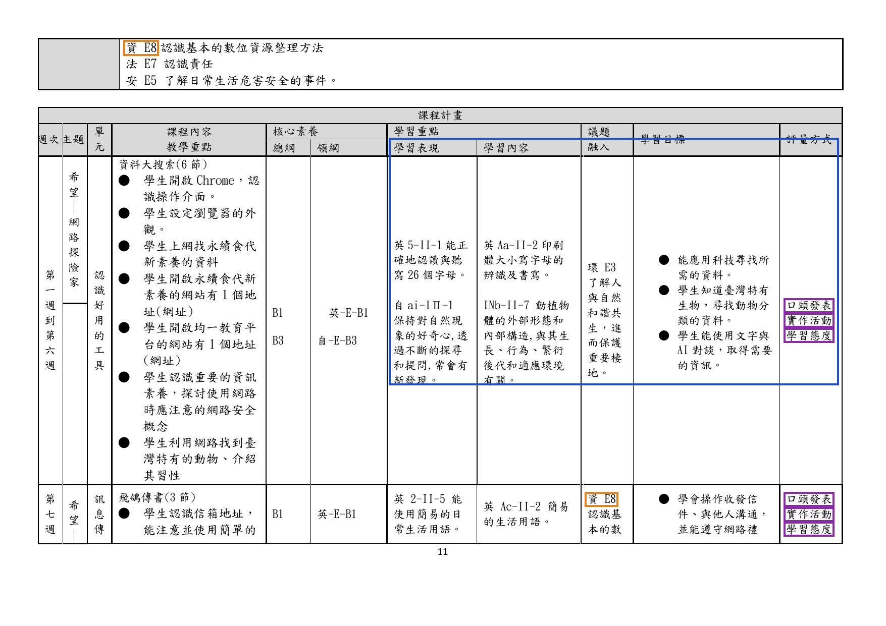
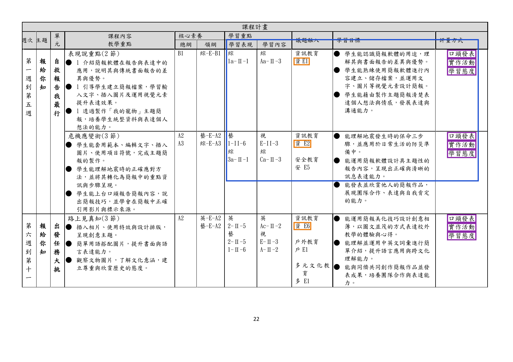
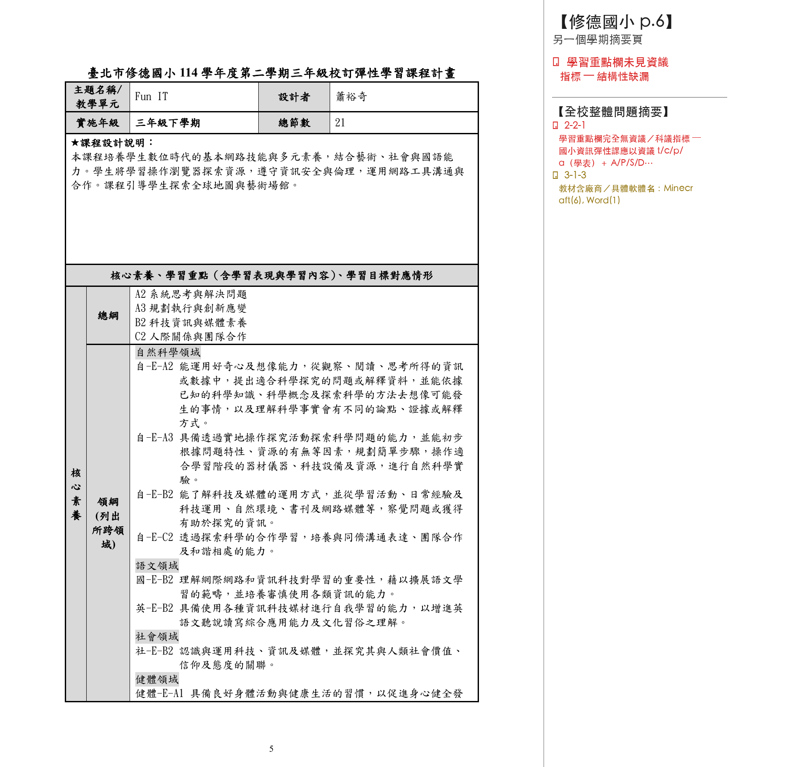
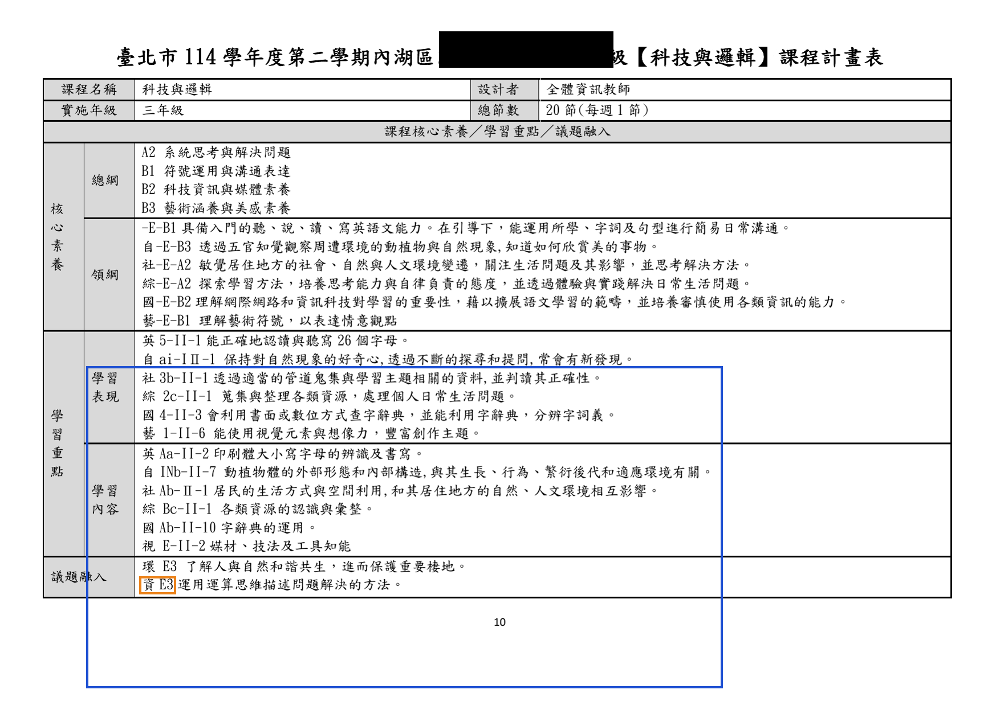

1 / 1
ESC 關閉
滾輪縮放 · 拖曳移動 · ←→ 換頁 · ESC 關閉
從看懂審查邏輯，到寫出合格的課程計畫
資訊教育的目標，從「被動接收特定軟體技能」轉為「以工具主動解決真實問題」。
港湖區 19 所國小（內湖 + 南港）全部都有不符合項目，每校 2 至 11 項不等。
不是港湖特別弱 — 全市都同樣痛。
SCHOOLS WITH ZERO VIOLATIONS
| # | 檢核碼 | 不符合率 | 主要錯誤 |
|---|---|---|---|
| 1 | 3-2-2 | 63.4% | 議題融入欄誤填「資 E」（自融自） |
| 2 | 4-1-1 | 48.8% | 評量與特定領域雷同 |
| 3 | 3-2-1 | 41.3% | 資議／科議錯置議題融入欄 |
| 4 | 2-2-3 | 38.4% | 學習重點未用參考說明 |
| 5 | 3-1-2 | 35.5% | 所跨領域前後不一致 |
資料源：課審資料表.xlsx · 全市 172 校 · Nora 重算
共同問題＝共同解法。今天就把這 14 題練到閉眼能答對。
同樣是「資訊」二字，在部定／校訂裡用不同代碼。所有 14 項錯誤的根源都從這條分界線開始。
教育部對議題的實施分為三種。差別關鍵在「時數從哪來」 — 因為議題本身沒有時數。
議題＝配菜，跟著領域課一起上
議題＝主菜，整個時段都在上這個主題
議題＝主菜，但走跨領域獨立設計
資訊科技校訂課程的落腳點是「統整性主題／專題／議題探究課程」 — 採議題主題式安排。空白表 v4.1「計畫說明一」勾的就是這項。
CHECKPOINT — 計畫說明一須勾選此項

分清楚這個，後面 2-1-1 就不會再錯。
| 部定課程（各領域） | 校訂課程（彈性學習課程） | |
|---|---|---|
| 課綱依據 | 各領域領綱 | 總綱 + 科議／資議參考說明 |
| 資訊地位 | 被融入的議題 | 主題／主要學習面向（以資訊為主體，可跨域） |
| 核心素養 | 領綱層級國-E-A1 ← 前面有領域名稱 | 總綱層級E-A1 ~ E-C3 ← 前面沒有領域名稱 |
國-E-A2、健體-E-C1）是「各領域專屬」的、會跟著該領綱走。E-A1 ~ E-C3）。
後面 2-1-1 會直接回來考這條 — 寫到「科-E-A2」就是踩雷（以為國小有科技領綱、實際沒有）。
兩組代碼長得很像，但用途完全不同 — 全份簡報的代碼系統地基。
| 符號 | 出處文件 + 在文件裡叫什麼 | 用途 | 出現欄位 |
|---|---|---|---|
資議 a-Ⅱ-1 | 《國民小學科技教育及資訊教育課程發展參考說明》中的「學習表現／學習內容」（第 2 階段） | 校訂資訊課的指標 | 學習重點欄 ✓ |
科議 t-Ⅲ-2 | 同上書（第 3 階段） | 校訂資訊課的指標 | 學習重點欄 ✓ |
資 E1、資 E8 | 《議題融入說明手冊》中的「資訊教育議題實質內涵」 | 融入非資訊主題課程 | 議題融入欄（校訂資訊課 ✕） |
科 E4、科 E6 | 《議題融入說明手冊》中的「科技教育議題實質內涵」 | 融入非資訊主題課程 | 議題融入欄（校訂資訊課 ✓ 可融入） |
國小最高用到 -Ⅲ-（5-6 年級）。三年級寫 資議 a-Ⅱ-1 對，寫 a-Ⅳ-1 就越級了。
→ 對應檢核 2-2-2 階段一致性
| 階段 | 年級 | 代碼 | 範例 |
|---|---|---|---|
| 第 Ⅱ 階段 | 3-4 年級 | -Ⅱ- | 資議 t-Ⅱ-1 |
| 第 Ⅲ 階段 | 5-6 年級 | -Ⅲ- | 資議 p-Ⅲ-2 |
| 第 Ⅳ 階段 | 國中 7-9 | -Ⅳ- | 國小不能用 ✕ |
校訂課程要跨域，不是單一領域的延伸。一眼看得出「這是電腦課」就不是校訂課程了 — 應該直接併入部定課程或節數。
「五年級『Mblock』直接使用軟體（Mblock）或硬體（mBot）名稱 — 不符合素養導向的命名原則。」
「理念」是整份計畫的精神指南針。若理念只談資訊，那學習重點、教學活動、評量都會往單一領域靠 — 後面全錯。
「本課程旨在培養學生資訊素養，學習電腦基本操作、文書處理與網路使用，提升學生數位能力。」
↳ 評語：完全無跨域精神 ─ 退件
「本課程以資訊科技為主體，依學校「健康、希望、關懷、卓越」四大願景，結合國語文、數學、自然、藝術等領域學習重點，培養學生運算思維、數位表達、跨域協作能力，引導學生以資訊工具探索世界、解決生活問題。」
「課程設計理念雖提到結合 STEAM 理念，但整體敘述仍偏重在『科技積木創作』等資訊科技教育，建議應呈現跨域之精神。」
E-B2），不能填科技領綱層級（如 科-J-A1）。2026-04-24 南港場新共識
E。E-B2），不能填科技領綱層級（如 科-J-A1）。| 階段 | 代碼 | 敘述（須整段抄） |
|---|---|---|
| 項目層 | B2 | 具備善用科技、資訊與各類媒體之能力，培養相關倫理及媒體識讀的素養。 |
| 國小 | E-B2 | 具備科技與資訊應用的基本素養，並理解各類媒體內容的意義與影響。 |
| 國中 | J-B2 | 具備善用科技、資訊與媒體以增進學習的素養… |
| 高中 | U-B2 | 具備適當運用科技、資訊與媒體之素養… |
「部分核心素養欄位直接填寫科技領域領綱層級的指標（如 科-E-A2），應修正為總綱層級指標（如 E-A2 具備探索問題的思考能力，並透過體驗與實踐處理日常生活問題）。」
「多處使用領域領綱層級的核心素養（如 健體-E-C1），應統一使用總綱層級指標。」
A2 系統思考與解決問題」、屬項目層代碼、未含階段碼。國小校訂課程應寫階段層 + 完整敘述（即 E-A2 開頭那段）才完整、才符合 4/24 共備修正後的共識。本頁已將原舉例改為階段層完整敘述、其餘原文照舊。
校訂課程一定要跨域。若所有單元學習重點只標資議／科議，形同自成一格的資訊課，違反校訂本意。
「4 個單元裡有 1 個跨域就 OK，其他 3 個沒跨沒關係；目前的寬度是這樣，之後越收越窄再調整。」
核心素養欄寫了某領域，學習重點欄就要有該領域的指標。
核心素養 → 學習重點
國小只用 -Ⅰ-、-Ⅱ-、-Ⅲ-，看到 -Ⅳ- 就是錯（國中代碼）。
3 年級 → only -Ⅱ-
三年級 學習內容：
運 t-Ⅳ-1 ← Ⅳ 是國中階段
三年級該用 -Ⅱ-。學習重點抄到 -Ⅳ- 等於把國中課程搬進國小。
核心素養：國-E-A3（國語文）
學習重點：藝、健體（沒有國語文）
素養掛了哪個領域，學習重點就要有那個領域。掛國語文卻沒寫國語文 = 假跨域。
-Ⅰ-、3-4 用 -Ⅱ-、5-6 用 -Ⅲ-，整份不出現 -Ⅳ-三年級 跨「國語文」單元： 核心素養：E-B2 具備科技與資訊應用的基本素養， 並理解各類媒體內容的意義與影響。 ＋ 國-E-B2 學習重點：資議 a-Ⅱ-1 ／ 國 6-Ⅱ-1
→ 階段 Ⅱ ✓ 領域 國語文 ✓
資議／科議（✓ 那一行）。資 E／科 E 是給別科老師（國語、社會、藝術⋯）把資訊融進他們的課時用的、不是給我們資訊老師的。
| 代碼 | 來源 | 資訊課能用嗎？ |
|---|---|---|
資 E1、科 E4 | 議題手冊 | ✕ 不能 （給別科融入用） |
資議 a-Ⅱ-1 | 參考說明 | ✓ 必用 （校訂資訊主體） |
| a | 資訊科技與人類社會 |
| t | 運算思維與問題解決 |
| p | 演算法 |
| d | 資料表示與處理 |
| k | 系統平台 |
⚠ 「a」是「人類社會」非「社會領域」
科議 a-Ⅲ-2）為本，不能用議題手冊的「實質內涵」代碼（如：科 E4）來取代。學習內容：資 E1（認識常見的資訊系統）
↳ 議題手冊「實質內涵」 — 融入非資訊主題課程用
學習內容：資議 a-Ⅱ-4（辨識資訊科技在生活中的應用情形）
↳ 參考說明「學習指標」 — 校訂主體用
「計畫中大量使用議題手冊的『實質內涵』代碼（如：科-E-A1、資 E1）取代應有的『學習重點』代碼（如：資議 a-Ⅲ-2）。」
「完全缺少『參考說明』的正式編碼，且在『議題融入』欄位誤用議題手冊代碼（資 E…）。」

藍框內：學習表現／學習內容欄填了「資 E1、資 E5、資 E8」這類議題實質內涵代碼。校訂課程應改用「資議 a-Ⅱ-X、科議 t-Ⅱ-X」參考說明代碼。
校訂課程中資訊是「主題／主要學習面向」，它的指標就該和其他跨域領域指標平行並列。另開一欄等於宣告「這些是額外的」，與主體地位矛盾，也常造成下一個錯誤 3-2-1（資訊指標跑到議題融入欄）。
3-2-1 是一組的 — 表格欄位設計錯，資議指標就跑到不該去的地方。| 學習表現 | 學習內容 | 參考說明 | 議題融入 |
|---|---|---|---|
國 6-Ⅱ-1 | 國 Ac-Ⅱ-1 | 資 E1 | 安 E5 |
| 學習表現 | 學習內容 | 議題融入 |
|---|---|---|
國 6-Ⅱ-1 ／ 資議 a-Ⅱ-1 | 國 Ac-Ⅱ-1 ／ 資議 d-Ⅱ-2 | 安 E5 |
形式跨域不等於實質跨域。若只是表頭漂亮、教學沒跨，課程仍是單一領域。
教學目標：能正確使用鍵盤輸入英文 教學活動： 1. 打字練習軟體 2. 英文單字打字 3. 測驗 （全部都是資訊活動，沒有國語）
教學目標：能用鍵盤輸入國語短文，並依段落格式排版
教學活動：
1. 打字基礎練習
2. 輸入「自我介紹」短文，分段、標點呈現
3. 互評同學作品的格式美觀度與錯字
教學內容：既包含資訊（打字、排版）
也包含國語（作文格式、標點）
老師寫核心素養時想得很大，但實際設計教學活動時只能跨一兩個。建議：核心素養寫保守一點，跟你真正會做的對齊。
核心素養：C3 多元文化（社會）
學習重點：社 3b-Ⅱ-1、藝 1-Ⅱ-6
教學活動：用 Scratch 畫簡單動畫
（資訊 + 藝術，沒有社會）
核心素養：E-B2 具備科技與資訊應用的基本素養，並理解各類媒體內容的意義與影響。
+ E-C3 具備理解與關心本土與國際事務的素養，並認識與包容文化的多元性。
+ 社-E-C3
學習重點：資議 a-Ⅱ-4、社 3b-Ⅱ-1
教學目標：用網路搜尋臺北地理資料整理
教學活動：Google Maps 規劃參觀路線
教學內容：資訊（網路搜尋）+ 社會（地理認知）
直抄廠商書名等於宣告「這只是廠商教材的延伸」，與「校訂課程是學校自行設計的特色課程」精神矛盾。
Scratch、Canva、Chrome、Google Maps 等通用工具軟體名稱可以直接寫，因為是技術名稱不是「教材／書籍」。
→ 下一頁看 8 行廠商範例對照
| 錯誤（特定廠商 · 真實案例） | 正確（通用描述） |
|---|---|
Windows10 電腦入門 | 電腦基礎操作教材 |
小石頭 PowerPoint 2019 | 簡報製作教材 |
Word 文書超簡單 | 文書處理教材 |
宏全版 Scratch 3 小創客寫程式 | 程式設計工具 |
翰林版國語第 5 冊 | 國語文教材相關單元 |
康軒數學 1-6 年級 | 國小數學領域教材 |
快樂小導演 - 威力導演 2025 | 影音剪輯軟體 |
均一教育平台 ／ 因材網 | 教育部數位學習平台 |
「『資訊素養與倫理第五版』可能指向特定書籍，建議改為『資訊素養與倫理相關教材』。」
單元名抄市售教科書，等同宣告「就是上教科書」而非學校特色 — 校訂課程應有該校獨有的主題與脈絡。
本國小資訊教科書
個單元名比對資料庫
→ 下一頁看三級判定與具體案例
| 判定 | 結果 |
|---|---|
| 完全相同 與清單中單元名一字不差 | 不符合 ✕ |
| 高度相似 僅換標點、加空格、改 1-2 字 | 建議修改 ⚠ |
| 概念相近但名稱差很多 改名後看不出原書名痕跡 | 通過 ✓ |
「我是小畫家」 vs 「我是天才小畫家」
→ 會被抓，要改就要大改。
「我是天才小畫家」 → 「數位小小藝術家」（結合學校卓越願景）
3-2-1 規範的是「資議／科議」（參考說明，校訂課用） ─ 該放學習重點欄。
「資 E」（資訊議題實質內涵）由 3-2-2 處理 ─ 校訂資訊課任何欄位都不該出現（自融自）。
「科 E」（科技議題實質內涵）可放議題融入欄（科技議題不算自融自）。
資議」「科議」），建議置於「學習重點」欄位，不能錯置於「議題融入」欄位。議題融入： 資議 a-Ⅱ-1 科議 t-Ⅲ-2
↳ 資議跑到不該去的地方
學習重點： 學習表現：資議 a-Ⅱ-1、國 6-Ⅱ-1 學習內容：資議 d-Ⅱ-2、國 Ac-Ⅱ-1 議題融入： 安 E5、品 E1（19 項議題裡除「資訊」自融自）
「本計畫全面性地將資訊議題的實質內涵代碼（如 資E1、資E2、資E5）錯置於『融入議題』欄位中。」
「在『議題融入實質內涵』欄位中，填入了應屬於『學習重點』的資訊教育議題實質內涵代碼（資 E…）。」
※ 原審查意見列「科E3」與「科 E…」一併視為錯置；依 5/7 共識：科技議題可融入校訂資訊課，故此處科 E 部分屬保守判讀、本簡報已剔除。
SCHOOLS WITH 3-2-2 VIOLATION
部定資訊融入國語 ✓ 主客分明
校訂資訊融入資訊 ✕ 主客相同 — 邏輯混亂
RULE OF THUMB ─ 校訂資訊課議題融入欄不會出現「資 E」（科 E 可融入）
資 E…）」之實質內涵代碼（校訂資訊主體＝資訊、自融自）。安全（交通安全） ／ 性別平等 ／ 戶外教育
性別平等 ／ 家庭教育 ／ 全民國防＊ ／ 環境
＊ 全民國防為政府另案要求、非 108 課綱原 19 項議題；其指標代碼系統與本頁不通用。
⚠ 順序依 108 課綱議題融入說明手冊 4.1–4.19 ／ 紅框＝115 上學期必填

橘框內：議題融入欄填了「資 E1、資 E2、資 E11、資 E12、資 E13」。校訂資訊課中資訊已是主體，**主題不能再以議題身份融入自己**；議題融入欄可填 18 項議題（19 項扣除「資訊」自融自；科技可融入）。
分界線：5 個面向至少 4 個指向社區人文 → 「社區人文主題式」課程；只要 1-2 個偏資訊（尤其名稱／核心素養）→ 仍判為資訊主體。
議題融入欄寫了一堆「資 E1、資 E8」 + 學習重點裡完全沒有資議／科議 — 這個典型錯誤連帶違反 5 項：
| 違反項 | 為什麼也錯 |
|---|---|
2-2-1 | 學習重點只有其他領域、沒有資議／科議 |
2-2-3 | 用了資 E 而非資議參考說明 |
2-2-4 | 資議獨立放議題融入欄 |
3-2-1 | 資議錯置於議題融入 |
3-2-2 | 議題融入誤填資 E |

紫框內：該校在「評量規準」欄誤寫了三件套類別標籤（實作活動／上課發表／作品優異）— 這些是「評量方式」欄該寫的。規準欄要改為敘述式 + 5 等級 + 跨域 20-40 字。
位置 ─ 每個單元表格內
寫法 ─ 教育部列 7-8 種類別、每項四字
↳ 三件套寫這欄 ✓ OK
位置 ─ 整份計畫最後、分學期各一張
寫法 ─ 質性敘述 + Likert 五等級 + 跨域
↳ 4-1-1 規範的是這欄 ⚠
不是每個單元一張、是整份計畫最後分第一／第二學期各一張。每條規準同時對應「資訊 + 跨域」學習表現。
| 評量規準（要同時對應資訊教育議題和相關領域（若有融入）的學習表現） | 表現優異 | 表現良好 | 已經做到 | 還要加油 | 努力改進 |
|---|---|---|---|---|---|
| 能運用圖文工具創作 3 段祝福語、版面整齊、文字通順 資議 a-Ⅱ-1 + 國 6-Ⅱ-4（跨國語） |
版面具創意、3 段通順無錯字 | 版面整齊、3 段大致通順、僅 1-2 錯字 | 完成 3 段、版面清楚 | 只完成 1-2 段 | 未能完成 |
| 能用 Scratch 設計動畫呈現交通安全故事情節 資議 t-Ⅱ-2 + 藝 1-Ⅱ-6（跨藝術）+ 安全議題（交通安全） |
動畫具創意、交通情境清楚、藝術元素豐富 | 動畫流暢、能呈現交通安全主題 | 動畫完整呈現交通故事 | 動畫部分完成、主題不夠清楚 | 未能呈現 |
| 能用 Excel 整理生活數據並產出豆苗生長長條圖報讀 資議 d-Ⅱ-1 + 數 n-Ⅱ-3（跨數學）+ 自然觀察素材 |
圖表清晰、能解讀豆苗生長趨勢 | 圖表正確、能簡單解讀 | 能產出豆苗生長圖表 | 圖表不完整 | 未能產出 |

紅框 = 核心素養誤用「科-E-A1」（2-1-1）；橘框 = 議題融入欄誤填「資 E1～13」（3-2-2）。同源錯誤連動，照前頁四步修正一次解決。
以下 4 張節選自不同區、不同學校的真實課程計畫。違反項目高度集中在「命名／領綱層級／資 E 錯置／階段碼前綴」這幾個踩坑點，跨區一致。點任何一張可放大檢視。

命名出現「電腦／資訊」學科文字（內湖某校）

學習重點欄誤用「資 E」（內湖另一校）

同樣的錯，跨到南港某校（4/24 已輔導）

領綱核心素養缺「E-」前綴（三下）
核心素養誤填 科-E-A1/A2/B1/B2/B3（國小無科技領綱・2-1-1）
四年級誤用第三學習階段指標（如 資 A-Ⅲ-1，2-2-2）
改為總綱層級（國小加 E- 前綴，如 E-A2）；指標改為對應第二學習階段。
教材出現「Windows10 電腦入門」「小石頭 PowerPoint 2019」（廠商書名・3-1-3）
核心素養誤填 健體-E-C1 領綱（2-1-1）
教材改「電腦基礎操作教材」；核心素養改 E-C1 總綱完整敘述。
大量使用議題實質內涵代碼（科-E-A1、資 E1）取代學習重點（2-2-3）
學習表現／學習內容分為兩獨立欄位，未併呈（2-2-4）
指標改 資議 a-Ⅲ-2；併入單一「學習重點」欄位。
這 3 案來自全市 172 筆真實審查資料，均為內湖區踩坑 ─ 非個案、是常態。14 項全錯反面教材檔：14項全錯反面教材_v4.1.docx
E-B2 具備科技與資訊應用的基本素養…）？從零開始建構
AI 自動生成草案，80% 寫出來不合審查
↳ 僅供「想看其他學校怎麼寫」參考
模擬教育局審查流程
精準揪出指標錯置、跨域不足、非法命名 + 提供逐條修正建議
↳ 4 步驟：上傳 → 啟動 → 排序修復 → 迭代清零
請打開你們自己的課程計畫，
送進 GEM —
看看能被抓出幾個不符合項目。
Nora & 成泰主任會在教室巡迴，隨時舉手問。
3-2-2 → 4-1-1 → 3-2-1 → 2-2-3 → 3-1-2規則是手段，不是目的。目的是讓孩子在資訊課裡學到「解決問題的數位能力」。
而是解決問題的數位能力。
連結各學科的強大橋樑。
讓 GEM 處理繁瑣法規，把時間還給教學設計。
不必背完今天 14 項規則 — 把這三個連結存好，遇到時查、查完照做，會比硬記更有效。
14 項檢核管「怎麼寫對」、教學綱要管「教什麼才對」。學校送審文件 OK 之後，更需要看內容是否對齊臺北市 115/3 公告的綱要。
回程路上歡迎掃下一頁的「14 項找錯遊戲」── 用 5 分鐘自測，看看你能找出幾個刻意安排的錯誤。